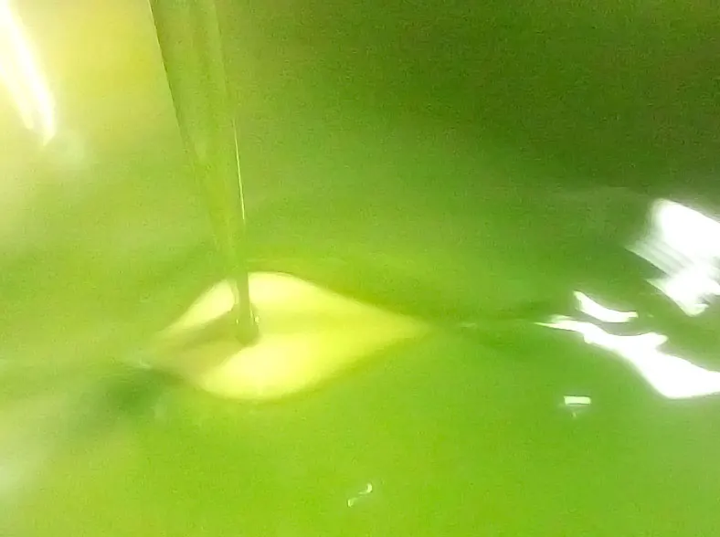

Come conservare l'olio extravergine a casa
Luce, calore e aria sono i nemici dell'olio. Tre regole semplici per mantenerlo buono fino all'ultima goccia.
Le prime olive sono al frantoio. Ecco quando sarà pronto l'olio nuovo e come prenotarlo.

Ogni anno, tra la fine di ottobre e l'inizio di novembre, gli uliveti di Montelibretti si riempiono di reti e cassette. Si comincia dalle olive destinate al Primo Raccolto, quando sono ancora verdi e i profumi sono più vivi.
Le olive raccolte la mattina vanno al frantoio prima di sera. È il modo più semplice per preservare i biofenoli: sono loro a dare all'olio l'amaro e il piccante che si sentono in gola.
Le Spremute sono il nostro olio novello: torbido, denso, di un verde acceso. Si trovano solo nelle settimane della raccolta. Se vuoi essere avvisato quando è pronto, scrivici su WhatsApp.
Luce, calore e aria sono i nemici dell'olio. Tre regole semplici per mantenerlo buono fino all'ultima goccia.
Perché abbiamo scelto di imbottigliarla da sola nella prima delle nostre Pepite d'Aurum.
Sotto i nostri ulivi cresce la rucola selvatica. Nel 2013 abbiamo provato a frangerla insieme alle olive.